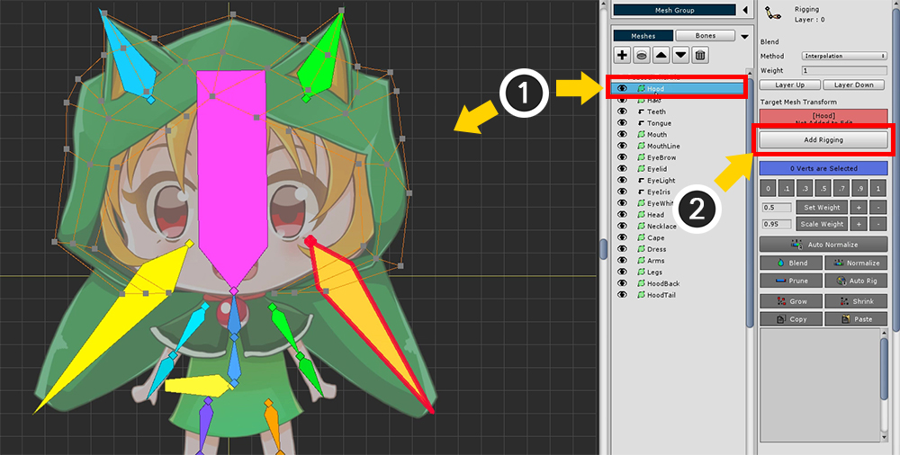
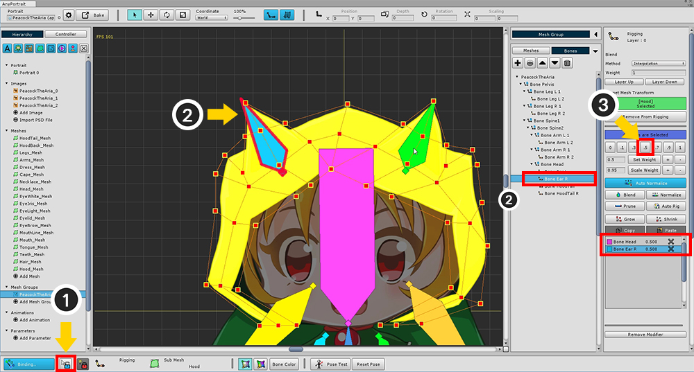
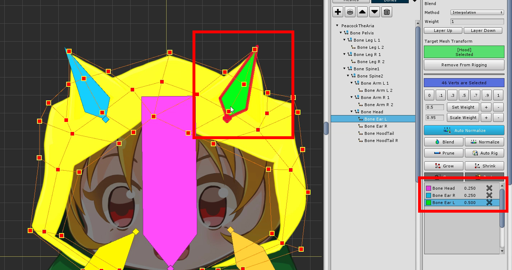
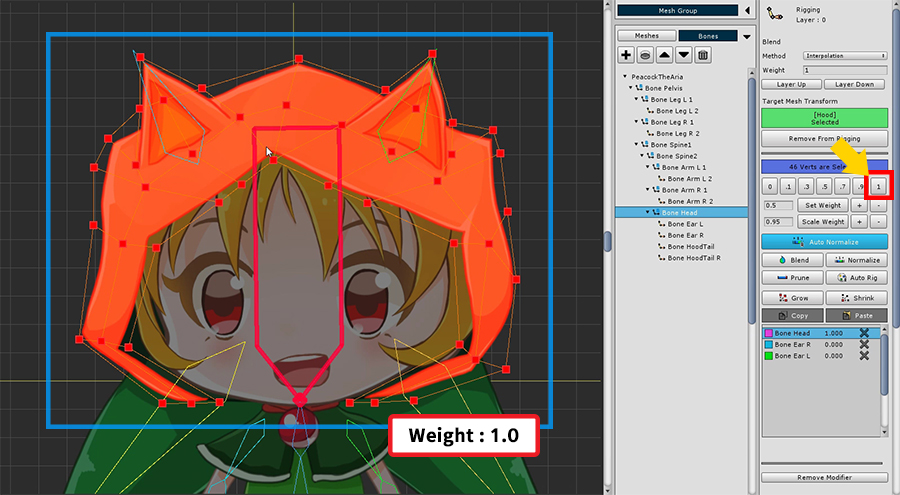
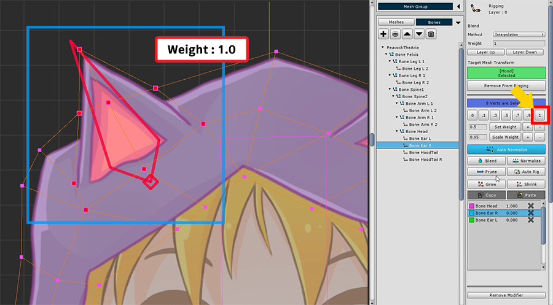
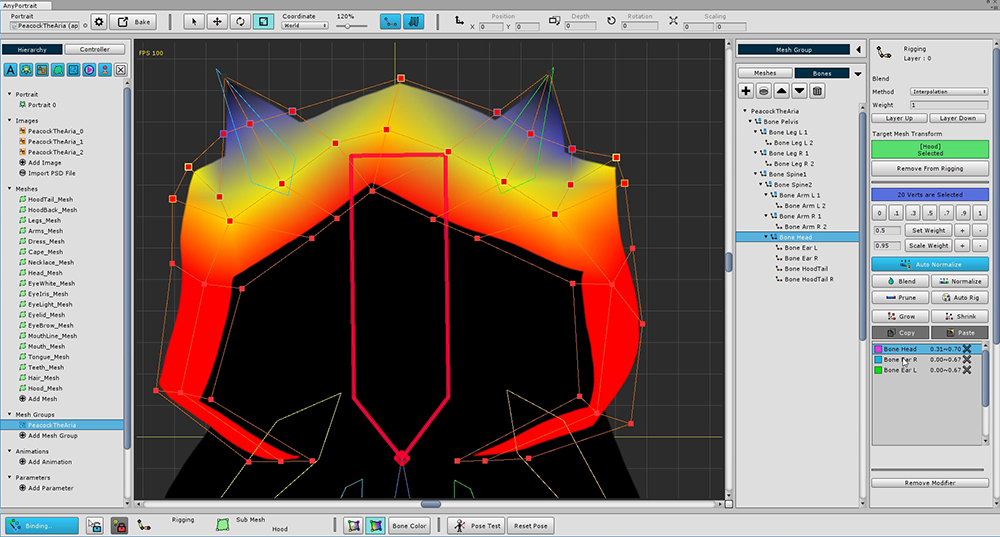
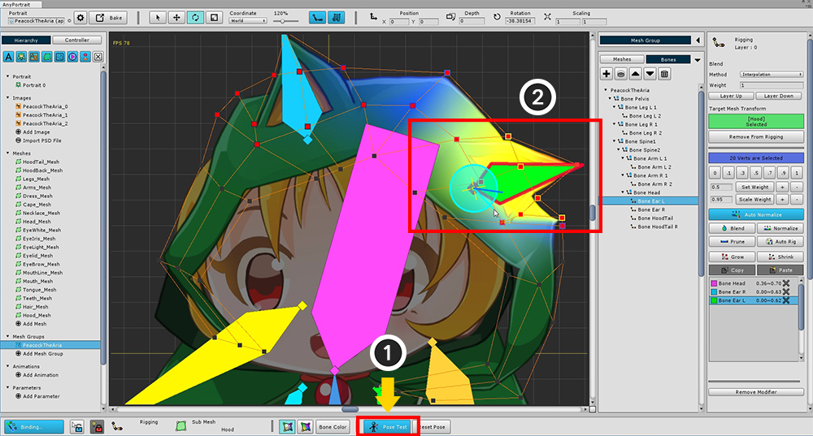
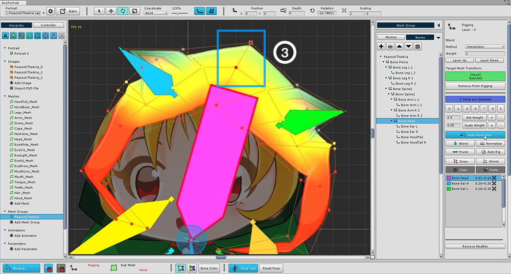
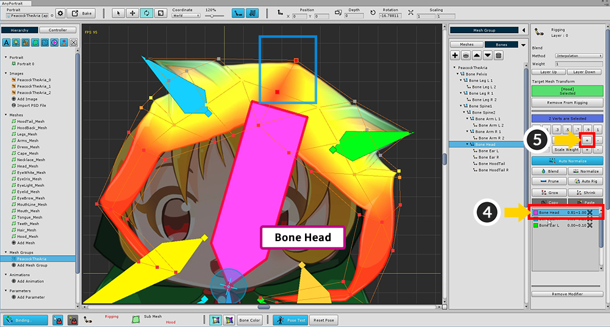
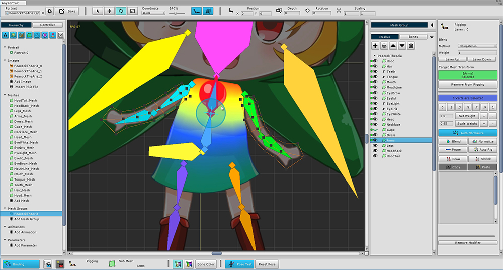

AnyPortrait > Getting Started > 2.5. Using the Rigging Modifier
2.5. Using the Rigging Modifier
1.0.0
For bone animation, a process called Rigging is essential.
Rigging can be defined as "Connecting vertices to bones".

It is important to enter the "Weight attached to the bone" in the vertex so that the vertex follows the movement of the bone.
In the left figure, all vertices have a weight of "Bone 1: 1.0".
Therefore, it does not depend on the movement of the green bone (Bone 2).
So you can see the smooth movement of the green bone.
>TXT
That is, Rigging is the process of setting the connection weights of "vertex + bone".

Add Rigging modifier.
(1) Press the Add Modifier button to select (2) Rigging modifier and add it.

First, modify the head hood.
(1) Select the Hood mesh, and (2) press the Add to Rigging button to register the mesh in the modifier.

Press the Binding button in the lower left of the screen to start rigging.
The rigging tool UI is structured as a below.
1. Add / Remove : Registers or unregisters the mesh with the rigging modifier.
2. Set Weight Manually : Weight is assigned by the value of the button.
3. Weight tools : These are tools that set weights.
Set Weight : Assigns a weight to the number on the left.
Set Weight +/- : Weight is added or subtracted in units of 0.05.
Scale Weight : Multiply the weight by the number created on the left.
Scale Weight +/- : Weight is multiplied by 1.05 (+ button) or multiplied by 0.95. (-button)
4. Assistant tools : This tool helps you to specify the weights of selected vertices.
Auto Normalize : When this is active, the weighted sum is corrected to 1.
Blend : Makes the weight of the vertex smooth by mixing it appropriately with the surrounding vertex values.
Normalize : Calibrate the weighted sum to 1.
Prune : Delete this information with a very low weight value.
Auto Rig : Rigging automatically based on registered bone information.
5. Grow / Shrink : Adjusts the range by further selecting or excluding vertices.
6. Copy / Paste : Copy or Paste the rigging information of the selected vertex.
7. Bone Rigging Information : Bones and rigging values registered for rigging. You can exclude the bone by pressing the X button. You can also select bone from this screen.


In the UI at the bottom of the screen, you can select 4 modes to visually display the rigging weights.
You can decide whether to use the bone color, or whether to display the texture together.

(1) Select all vertices, and then (2) select "Bone Head".
If the bone is not selected, turn off Selection Lock or choose from the menu on the right.

Set the weight of all vertices to 1 for Bone Head.
You can see that the color of the mesh changes like the color of the head bone.

Briefly (1) release the Selection Lock and (2) select "Bone Ear R".
If you do not release the selection lock, please select it from the right menu.
With vertices selected , (3) set weights to 0.5.
You can see that the rigging information of "Bone Ear R" is registered.

Weights are assigned to the opposite ear as well.

Select "Bone Head" again. Select all vertices and assign a weight of 1.

Select "Bone Ear R", select its surrounding vertices, and assign a weight of 1.

Weights are applied only around the ears to change the color.

In the same way, we assign weights for the opposite ear.
Rigging is a task that is difficult to complete at once.
Even if weights are specified, it is easy to see awkward points when actually moving the bone.
Therefore, the Rigging modifier provides a "Pose Test" function that allows you to temporarily move bones.
Use the Pose Test function to see if the weights are applied properly and try to fix them.

First, make sure the bones appear on the screen.
(1) Make the bone appear as "filled".
(2) Press the Pose Test button.

You can select a bone to move freely.
Please check that it is properly assigned weight.
Rigging in the current state is not smooth.
You need to make it smoother and fix the problem areas.

Press the Pose Test button to disable it, and then modify the rigging again.
(1) Select all the vertices around the ears.

(2) Press the Blend button several times to soften the weight value.
(We changed the weight value to "Bone Color Off + Texture Off".)

You can see that the weights are distributed more smoothly than before.

Now let's test again.
(1) Turn on Pose Test mode.
(2) Tilt ears to see if the rigged rigging is applied properly.
In this sample, you can see that one side of the character is tilted and the opposite side moves as well.
Let's suppose that the vertex on the other side should not move.
(Rigging is done differently depending on the intention of the designer.)

(3) Select vertices of the center of the head.

(4) Select "Bone Head", and (5) press the Set Weight + button several times to add weights.

(6) Select one of the vertices on the ear, and then (7) select Ear (Bone Ear R or L).
You can see that the weights are applied beyond the center.

(8) Set weight 0.
Make the same for the opposite ear and vertices.

Now add other meshes to the Rigging Modifier.
Face meshes should be registered only on the head (Bone Head).

Other meshes are rigged while properly using the Pose Test.
The screenshot below shows the rigging results for each bone.
Please refer to these for rigging.